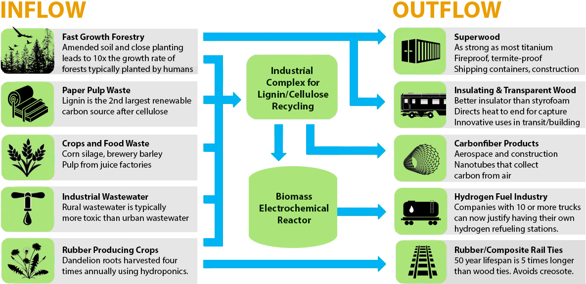

Project Planning
The following is to inspire ideas and discussion as communities design uses for the sustainable materials management tool.Economically and Environmentally Sustainable Production of
Fuels and Chemicals from Biomass in the Southeast
Valerie M. ThomasGeorgia Institute of Technology
Atlanta, Georgia
Production of fuels and chemicals from biomass can potentially support rural economies and support economic development with low environmental impact.
The USDA is sponsoring a research project involving researchers at Northwestern University, University of South Florida, the Georgia Institute of Technology, and LanzaTech, on technology for production of fuels and chemicals from biomass.* This specific technology could produce, for example, components for plastics made from wood waste rather than from natural gas or petroleum.
We are interested in conversations with stakeholders, to hear about the issues that matter to community members, to environmental advocates, and to people working all along the supply chain of fuel and chemical production in the southeast. We will have a stakeholders meeting on March 3 at the Georgia Tech and we welcome participation.
We are endeavoring to establish an ongoing network and will allow the voices of stakeholders to be reflected in the research.
*Engineered reversal of the β-oxidation cycle in clostridia for the synthesis of fuels and chemicals. Sponsored by the US Department of Agriculture, National Institute of Food and Agriculture, and the US Department of Energy Biomass R&D Initiative.
Visualizing Sustainable Materials Management
Anaerobic Generator - River Inflow with Livestock Prebiotics OutputCostas Simoglou
Georgia Department of Economic Development


Organic Fraction of Municipal Solid Waste (OFMSW)
Lignin and Cellulose Processing Center - Railroad Industry Focus
Loren Kevin Heyns
Georgia Department of Economic Development
Brings together wood-processing industries that produce large quantities of lignin and cellulose.

Harvesting Hydrogen from Tough Biomass
Yulin Deng and his team at Georgia Tech have developed a low-temperature electrolytic technology that can harvest hydrogen fuel from obstinate molecules like lignin and cellulose.
Related articles on Fast Forestry and Superwood
Model.earth/community/tools/#forestry
View Goods and Services IO example
View Sankey Material Flow chart example